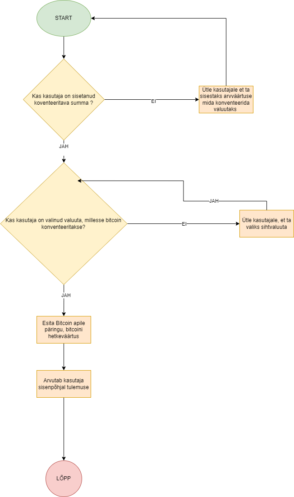

Ülevaade
BitcoinCalculator on lihtne tarkvara, mille eesmärk on pakkuda vahendit Bitcoini väärtuse arvutamiseks ja väärtuste analüüsiks. Projekt on loodud praktilise kasutuse ja õppimise eesmärgil.
Nõuded
- Node.js (versioon 14 või uuem)
- Git (versioonikontrolli jaoks)
- PostgreSQL (andmebaasi seadistamiseks, kui kasutusel)
- Internetüyhendus (andmete sõltuvuste tõmbamiseks)
Paigaldamine
Paigalda projekt lokaalselt järgides neid samme:
- Klooni repository oma arvutisse:
- Liigu projekti kausta:
- Paigalda vajalikud sõltuvused:
- Käivita rakendus lokaalselt:
git clone https://github.com/RihoSepp31/BitcoinCalculator.git
cd BitcoinCalculator
npm install
node app.js
Kasutamine
Kui tarkvara on edukalt paigaldatud ja käivitatud, saad rakendust kasutada oma brauseris või lokaalses terminalis. Peamised funktsioonid hõlmavad:
- Bitcoini vahetuskursi arvutamine.
- Lihtsad matemaatilised tehingud (näiteks korrutamine, jagamine).
- Informatsiooni analüüs ja kuvamine.
Kasutatud Tehnoloogiad ja Käsud
Selles projektis on kasutatud järgmisi tehnoloogiaid ja käske:
- Node.js: JavaScripti põhine serverirakenduse keskkond.
- Git: Versioonikontrolli vahend, mis aitab projektifaile hallata.
- NPM: Node Package Manager, millega hallatakse projektis vajalikke sõltuvusi.
- git clone: Repository kloonimiseks kohalikku masinasse.
- npm install: Vajalikud sõltuvused paigaldatakse automaatselt package.json faili alusel.
- node app.js: Rakenduse käivitamiseks lokaalselt.
Lisaks on kasutusel HTML, CSS ja JavaScript kasutajaliidese ja funktsionaalsuse loomisel.
Protsessidiagramm
Allolev diagramm kirjeldab rakenduse põhilist töövoogu:
Autor
See projekt on loodud Riho Sepp poolt. Lisainfo ja uusim versioon on saadaval GitHubis: